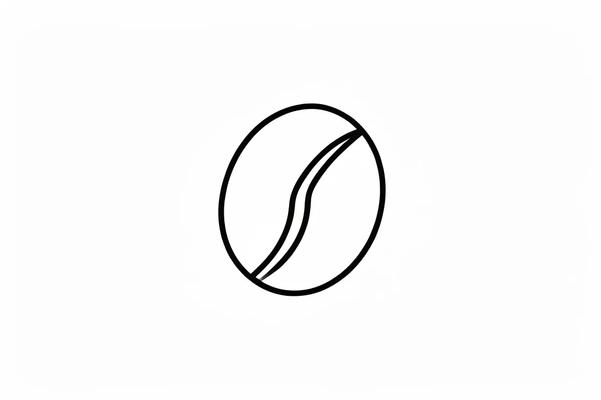

logoer · 1975–now · også: Logotype, Minimalt ordmerke, Logo kun av skrift
Navnet alene, satt eller tegnet i én vekt av en sans, med én detalj som gjør det til ens eget: en kuttet strek, en skjult pil, et par sammenføyde bokstaver. Ingen symbol og ingen ramme.

Kjerneidé
Navnet er merket: ett nøye avstandsjustert ord, med én egen detalj, er tydeligere og mer varig enn noe symbol.
Designprinsipper
Bruk navnet på én linje, i én vekt av en sans eller et eget monolinje-alfabet.
La nøyaktig én detalj eie merket: en fjernet tverrstrek, en ligatur, en kuttet strek eller en form i motformen.
Sett avstanden på øyemål: optisk sporing på 0–5 % for små bokstaver, 5–20 % for versaler.
Bruk én farge i hovedutgaven; en andre farge kan markere bare én del av ordet.
Hold ordets høyde på 15–25 % av bredden, slik at det passer i en topptekst og på et smalt skilt.
Definer frisone som høyden av én versal eller én x-høyde på hver side.
Antimønstre
Et symbol ved siden av ordet i hovedmerket
To eller flere skrifttyper
Kontur, skygge eller skråkant på bokstavene
En ramme eller et merke rundt ordet
Forvrengning av bokstavbredder for å passe i en boks